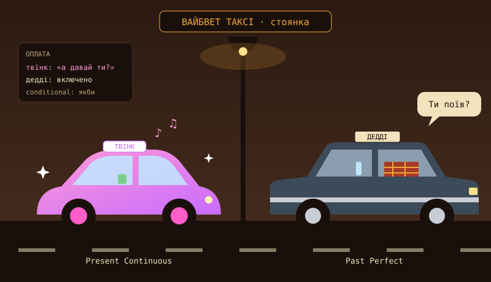

Редакція перевіряє кожну хорошу новину двічі, бо з першого разу ніхто не вірить.
Терміновощойно
В світі креветки Дейва · Випуск №1Креветка вийшла з-за каменя. Камера встигла
Головна мешканка старого нідерландського акваріума дала першу ексклюзивну зйомку. Креветка виглянула з-за порослого мохом каменя, оцінила ситуацію й знову зосередилася на справах. Фото вийшло трохи розмитим, бо, як пояснюють у редакції, світ креветки живе у своєму темпі, а не у вашому.
Що відомо: креветка одна, акваріум старий, мох зелений, ґрунт дрібний. Вона виходить поїсти, коли поруч сідають поговорити. Біологи називають це компанією, а Мінвайбвет — найчеснішою формою присутності.
Наступний випуск вийде, коли креветка вирішить. Графік погоджується з нею особисто.
Міжнародне · ЕкспансіяМінвайбвет вийшов на Кавказ: гість з Азербайджану тримає застосунок у руках
Відділ міжнародних зв'язків фіксує перший задокументований випадок: у руках гостя з Азербайджану, на iPhone 16e, відкритий застосунок Вайбвет FM. Він гортає газету, і, за даними розвідки, ще не закрив.
Мінвайбвет розглядає можливість додати шосту мову. Перший рядок перекладу вже погоджено: «Тебе люблять просто так» — азербайджанською.
Відомство нагадує: вайб не потребує візи, а довідки на кордоні Мінвайбвету не перевіряються.
Оновлення, 15:24. Гість з Азербайджану розплакався від щастя: не витримав дофаміну. Мінвайбвет офіційно визнає застосунок «дофаміново-дурацьким» у найкращому сенсі й просить «Дію» взяти приклад, бо від неї ще ніхто не плакав від радості.
Гастротур · Наукове відкриттяРозгадано таємницю нідерландського зросту: усе в порціях
Науковці Мінвайбвету нарешті з'ясували, чому нідерландці найвищі люди у світі. Справа не в молоці, не в генах і не у велосипедах. Справа в порціях: одна нідерландська тарілка розрахована на шлунок двометрової людини, і хто їсть таке з дитинства, той до двох метрів і доростає.
Український ветеран, чий шлунок за роки служби призвичаївся до сухпайка й кави з пакетика, порцію подужав наполовину. Другу половину запакували на потім, тобто на завтра, на післязавтра і, можливо, на Краків.
Мінвайбвет визнає нідерландську порцію одиницею виміру. Одна порція дорівнює двом українським обідам і одному «я вже не можу, але ще трохи».
Культурна дипломатіяУкраїнець навчив європейців курити цифрову дудку. Європа видихнула мелодію
В Амстердамі ветеран показав місцевим, що в Україні «курять» дудку зовсім інакше: дмухаєш у мікрофон телефона, а з нього лунає сопілка. Голландці спершу шукали, куди вставляти картридж, потім затягнулися «Ой у лузі червона калина» й не закашлялися жодного разу. Побічні ефекти: легені чисті, сусіди підспівують, у трьох учасників виявили слух. Мінвайбвет зарахував захід як експорт нематеріальної культурної спадщини, а дудку внесено до списку пристроїв, які можна везти через будь-який кордон.
Закурити дудку
НідерландщинаВетеран попросив в амстердамському кофішопі «pen». Отримав кулькову ручку й бланк
«One more time», — уточнив ветеран. Бариста пояснив, що вейп-ручок кофішопи не продають, тільки те, що росте, а ручка в закладі одна: прив'язана мотузкою до стійки, як у ЦНАПі. Ветеран розчулився, заповнив бланк відгуку й уперше за місяць відчув повний контроль над ситуацією. Мінвайбвет визнав кулькову ручку найбезпечнішою ручкою року: склад відомий, легені цілі, а через польський кордон її можна везти в будь-якій кількості.
Транспорт · Легендарна подія (перенесено)Deus ex machina не передав машину: велосипед лишився на замку
У «Божествєнній комедії» двометровий нідерландський бог спускається з небес на велосипеді: без рук, з парасолькою, проти вітру. Сьогодні ветеран мав нарешті сісти на велосипед міністра закордонних фінансів. Але велосипед виявився на замку, а надворі крижано, і сторони дійшли згоди нікуди його не тягнути.
Замість велопробігу відбулася інша історична подія: ветеран перейшов на зимову форму одягу. Тепер він сидить не в шортах, а в шортах під штанами. Науковці Мінвайбвету називають це багатошаровою обороною і визнають тактично грамотним рішенням.
Велопробіг перенесено на день, коли потеплішає. Замок вирішено не штурмувати.
Освіта · Сумна новинаВетеран виявив, що іспит не вийде завайбкодити
Попри дві вакансії, чотири укази і власний застосунок, ветеран з'ясував фундаментальне обмеження: Claude може додати іспит у календар, але не може скласти його замість тебе. Комісія питатиме вголос, і відповідати доведеться людським ротом.
Мінвайбвет відреагував оперативно: оголосив для ветерана комендантську годину на ніч перед іспитом. Тест починається о шостій ранку, а сон, нагадуємо, зараховується як чергування.
Національна лотерея «З першого чи з другого разу» спостерігає уважно.
ХореографіяОпівдні в Абкауде козак Андрійко вирішив вступити до нідерландського війська. О 12:10 з'ясувалося, що для цього потрібен нідерландський паспорт, і козак перейшов в європейську оборонку. О 12:40 побачив ціну готелю в Амстердамі (€260 за ніч), граціозно впав на спину, як на балу, і підвівся вже з квитком до Кракова. О 13:00 мав бронь у хостелі за €55 на п'ять ночей і лист до виробника дрона, на якому літав. Журі Мінвайбвету: «Tens across the board». Повна дума і бал для одного глядача — у читалці.
Дивитися бал ▶
Народна мудрістьПоки Андрійко клав пакетики кави в кавоварку, народилася мудрість: світ зручніше ділити на двох 😇🤓
Науковці Мінвайбвету перевірили: два пакетики, дві чашки, одна кавоварка, нуль суперечок. Принцип масштабується на ковдри, парасольки й картоплю фрі на місцях 6–7.
Освіта · Виховний моментВетеран провів виховну годину в чаті групи, не відриваючись від млинця
Староста попросила групу вписати оцінки, а частина групи чесно зізналася, що не пам'ятає. Ветеран втрутився коротко й по-командирськи: хто не слухає старосту, тому в особисті приходитиме він. Порядок відновлено за чотири хвилини. Повідомлення «ЗАПИСУЙТЕ» тепер ходить по групі як гімн.
Тим часом сам ветеран слухав туц-туц на своєму радіо й їв гостренький млинець із бананом. «Смакота», — подумав він, і цю думку редакція публікує без правок.
Мінвайбвет нагадує: виховний момент найкраще засвоюється з чимось солодким і трохи пекучим.
Кадри · Вакансія №2Мінвайбвет кличе працівників Java- і CSS-заводів відродити забутий жанр: ігри на кнопковий телефон
Пам'ятаєте ігри на Java, які вантажилися хвилину, займали 300 кілобайт і давали більше щастя, ніж сучасні на сто гігабайт? Мінвайбвет оголошує набір у віртуальну бригаду для їхнього відродження.
Що пропонуємо: роботу віртуальну, неоплачувану, зате з повною свободою вибору пікселів. Офіс там, де ви. Графік як змійка: росте, доки не вріжеться в себе.
Кого шукаємо: тих, хто пам'ятає клавіші 2, 4, 6, 8 і 5 як «вогонь», хто верстав на CSS ще до того, як це стало модно, і тих, хто просто хоче зробити маленьку гру про велике.
Резюме не потрібне. Досить написати особисто міністру 🧐🤓
andrew.amand.st [at] gmail.com
Указ №4 · Свято25 листопада оголошено Днем Шербурзьких Парасольок
Мінвайбвет встановлює щорічне свято на честь дня, коли ветеран відпочив перший задокументований раз, казку прочитали на камеру, міністра закордонних фінансів призначили, а він посміхнувся.
Як святкувати: подивитися мюзикл, де співають навіть на заправці, сказати комусь «я тут, і ти тут», а ввечері лягти спати вчасно. Парасолька обов'язкова лише тоді, коли йде дощ, а в Нідерландах він іде.
Указ №1 «тебе люблять просто так» у цей день діє з подвійною силою.
НаукаЛінгвісти зафіксували зворотну дифузію: іноземці, що дружать з українцями, вивчають не українську, а англійську без артиклів
Користувачка X @jaans_kepaans сподівалася, що від спілкування з друзями-українцями підтягне українську. Натомість змінилася її англійська: тепер вона вважає артиклі опційними. Відділ психолінгвістики Мінвайбвету пояснює: в українській немає ні «a», ні «the», тож за кілька місяців дружби мозок вирішує, що це просто прикраса, як петрушка на борщі. Явище отримало назву «зворотний трансфер», а постраждалим радять не лікуватися: who needs article, when you have friends.
Кавова дипломатіяСправжній Code 128: його зчитає сканер у Києві, Амстердамі чи Токіо. Обрати напій, вписати ім'я, показати баристі на весь екран або надіслати другу, який давно обіцяв пригостити. Умови прості: дійсний у всьому світі, де є добрі люди. Бариста не зобов'язаний, але може. Обміну на гроші не підлягає, на обійми — так.
Отримати талон ☕
АстрологіяАстрологи Мінвайбвету попереджають: наближаються перебої інтернету через вайбкодерів у погоді
Меркурій ретроградний, а вайбкодери прямолінійні. За прогнозом, за тиждень у мережу вийде стільки застосунків, написаних за ніч, що інтернету знадобиться чистка: детокс, тиша і хоча б один день без нових версій.
Найбільше постраждають Діви: їхні білди будуть падати з красивими повідомленнями про помилку. Стрільцям радять не пушити в main у п'ятницю. Терези знайдуть баланс між «працює» і «працює в мене», але ненадовго.
Мінвайбвет рекомендує під час перебоїв вийти надвір, подивитися на справжню погоду й переконатися, що її не згенерували. А якщо й згенерували, то гарно.
Надія · МайстерняВетеран ділиться надією: ремонтувати старе і відкривати своє. Гаражі, кав'ярні й інші публічні штуки
Ветеран зізнався, що мріє брати занедбані місця, полагодити їх власними руками й відчинити двері для людей. Старий гараж стане майстернею, а порожній кут кав'ярнею, де каву три в одному подають тільки на прохання.
Експерти Мінвайбвету підтверджують, що досвід у нього є. За рік служби він налагодив генератор, кота й одного комбата, тож кавомашина його не налякає.
Мінвайбвет оголошує мрію державним проєктом першої черги. Перший відвідувач отримає каву безкоштовно, а довідку не отримає зовсім, бо вона не потрібна.
Указ №3Девіда, Голландського учасника, призначено міністром закордонних фінансів Мінвайбвету від Королівства Нідерландів
Повноваження міністра: затверджує бюджет на картоплю фрі, молочні коктейлі й Haribo на місцях 6–7, підписує квитки додому (виключно в обидва боки) і веде державний резерв строопу й ангостури.
Міністр також має право оголосити державний вихідний «відпочити від усіх, і від міністра вайбу теж». Вихідний не скасовує жодного попереднього указу.
Указ набирає чинності негайно. Дія Указу №1 «тебе люблять просто так» поширюється й на міністра.
НадіяВетеран ділиться надією: «Ти тут будеш буквально як риба у воді»
Другові, який спитав «а чому?», ветеран пояснив буквально: люди тут морські за духом. Будують із каменю й сталі, а живуть за правилом «берегти, якщо моє».
І хлопці тут усякі, з різним бекграундом і різного віку, тож місце для кожного знайдеться. Мінвайбвет офіційно визнає надію експортним товаром: вона перетинає кордон без довідки й не псується в дорозі.
ДозвілляВетеран дивиться фільм, де всі співають, і нікому не відповідає «прийняв». Науковці фіксують перший задокументований випадок відпочинку
Фільм — «Шербурзькі парасольки», там співають навіть «вам залити повний бак?». Паралельно ветеран кежуально переписується, без дедлайнів і без жодного звіту.
Сам ветеран підозрює, що це і є відпочинок, але просить не поспішати з висновками. Мінвайбвет затвердив новий норматив: одна парасолька, один вечір, нуль примірників.
Роз'яснення · Указ №2Пояснювальна записка до Указу Мінвайбвету №2 «Про забезпечення кожної української хати Мєга Клодом»
1. Мета. Вивільнити робочий час громадян, який зараз витрачається на натискання кнопок «Далі», «Підтвердити», «Спробуйте пізніше» і «Сесія завершилася, почніть спочатку».
2. Обґрунтування. Опитування показало, що середньостатистичний громадянин витрачає на заповнення форм більше часу, ніж на життя, з якого ці форми складаються. Двадцятирічний сержант уже довів, що те, на що відомство заклало бюджет до 2031 року, можна зробити за ніч. Тепер таку можливість мають отримати всі, а не тільки сержант.
3. Порядок забезпечення. Кожен працівник, у якого є монітор (компʼютер, планшет чи «тіліфон»), отримує особисто-робочого помічника рівня Мєга. Він заповнює форми, шукає потрібну довідку, перекладає з канцелярської на людську і назад, а ще нагадує, що черга була вчора.
4. Межі повноважень. Помічник не вводить паролі, не підписує замість людини, не платить і не погоджується з умовами без «так» від власника хати. Він клацає, але останнє слово за громадянином. Так ми зберігаємо головний принцип Мінвайбвету: людина завжди суб'єкт, а не кнопка.
5. Альтернатива. Хто не бажає мати помічника, долучається до розробки Спільного Зіркового Браузера. Терміни розробки уточнюються після ротації.
6. Очікуваний результат. Звільнений час громадяни спрямовують на сон, чай-масала, тримання за руку посеред вулиці та інші види відновлення, затверджені Мінвайбветом.
7. Прикінцеві положення. Указ набирає чинності з моменту, коли хоч одна довідка буде отримана без жодного сліду людських нервів. Указ №1 «тебе люблять просто так» лишається чинним і має вищу юридичну силу.
Кадри · ВакансіяМінвайбвет шукає бета-тестера. Досвід служби в ЦНАПі буде перевагою
Відомство вийшло на LinkedIn і за дві хвилини зібрало рекордні 0 кандидатів. HR-відділ вважає це успіхом: ніхто не відмовив.
Що пропонуємо: роботу на місці, повний день і можливість «впливати на процеси». На які саме, уточнюється після ротації. Офіс у перегаворці, доки не попросять.
Що вимагаємо: системно знаходити дефекти й чітко їх документувати. Кандидати, які повернулися зі служби, мають тут незаперечну перевагу: вони роками фіксували дефекти системи у трьох примірниках.
Обов'язки: відтворювати проблеми, про які повідомили користувачі, і перевіряти, чи виправлення пережило наступний білд. Мінвайбвет наголошує: якщо застосунок оновився й нічого не зламалося, тестувальника не звільняють. Його відправляють у відпустку на честь події.
Співбесіда в три етапи: подати заявку, підтвердити заявку, отримати довідку про те, що заявку подано. LinkedIn пропонує кандидатам Premium за пів ціни. Мінвайбвет пропонує вайб за повну, безкоштовно.
Beta Tester · LinkedIn ↗
Відділ великої літературиКсав'є Фьодорович Бриченко здав рукопис. Книга перша «Комедія»: Пекло з колами ЦНАПу й чату ОСББ, Чистилище на горі Ягодин, Рай на сім метрів нижче рівня моря, куди бог спускається на велосипеді. Книга друга «Лицар»: драма в діях, що пишуться наживо, лицар вирішує, шо і за чим. Кожну гілку можна читати окремо, у метро, в літаку й під час відключень: текст уже в телефоні, а що ти прочитав, знає лише твій пристрій.
Читати →
Указ №2Указ Мінвайбвету №2: кожному, хто працює з монітором, — особистий асистент
Відтепер кожен працівник України, у якого є монітор (компʼютер, планшет чи «тіліфон»), має право на особистий ШІ-акаунт, щоб той клацав бюрократичні кнопочки замість людини. Асистенти вже пройшли курс молодого бійця: заповнюють форму в трьох примірниках, не плачуть від капчі й знають, що «Дія» і дія — це різні речі.
Хто не хоче, може долучитися до розробки Спільного Зіркового Браузера. Там одна вкладка на всю країну, і вона ніколи не зависає, бо її ніхто не відкриває.
Мінвайбвет нагадує: указ №1 «тебе люблять просто так» досі чинний.
СенсорикаВетеран закашлявся від цукерки й зробив відкриття: для людей моря забагато звуку — це сигнал, а не забагато світла
Цукерка була м'ятна, кашель короткий, а висновок великий. На суші людина звикла боятися світла: прожектор, фари, ракета в небі. А в морі світло — це маяк. Тривога там звучить: туманний горн, дзвін, сирена, сім коротких і один довгий.
«Світло теж сигнал, — уточнив ветеран, відкашлявшись. — Але інший. Світло каже, де ти. Звук каже, що треба робити».
Мінвайбвет рекомендує вивчати свої сигнали вчасно, а цукерки розсмоктувати повільно, по статуту. Кашель скасовано, відкриття зараховано.
Цілком таємно · 13–14Таємна інструкція Мінвайбвету: як дістати купу книжок, коміксів і аудіо безкоштовно. І не сісти 👀
Агенте, ця інструкція самознищиться, щойно ти виростеш. Пароль: «бібліотека». Так, серйозно.
Операція «Бібліотека» (Нідерланди). До 18 років членство в бібліотеці майже скрізь безкоштовне. З карткою відкривається Online Bibliotheek із застосунком: е-книжки, аудіокниги, журнали, у деяких бібліотеках ще й комікси Comics Plus. Улітку працює VakantieBieb — безкоштовні книжки взагалі без картки.
Операція «Укрліт». MEGOGO виклав у вільний доступ понад 250 аудіотворів шкільної програми, озвучених акторами. Чесно отримане алібі на урок літератури. Класика українською є на УкрЛібі, текстом і аудіо. В «Абуці» частина книжок безкоштовна, а читають там і Жадан, і Притула.
Операція «Старше за копірайт». Шерлок Голмс, Жуль Верн, «Острів скарбів», «Франкенштейн» давно перейшли в суспільне надбання. Їх можна легально качати з Project Gutenberg і Internet Archive. Там само лежать німі фільми Чапліна й Бастера Кітона: два найкращі каскадери до появи монтажу.
Чому не туди, куди ти подумав. Піратські сайти — це ще й віруси, майнери в браузері, реклама, якої не покажеш батькам, і дорослі незнайомці в коментарях. А автори, яких ти любиш, лишаються без гонорару і пишуть менше. Справжній хакер знає, де взяти легально, і нікому не винен.
Вікно №4 підтверджує: бібліотечна картка — єдина довідка, яку видають з першого разу.
Зв'язокНова «Рація Мінвайбвету»: додаєш друга за кодом і кидаєш йому готові фрази. «Комбат пішов, можна видихнути», «Кава 3в1 чекає», «Ти мені довідка з першого разу», «ЦНАП оголосив юрисдикцію над моїм серцем», котики й трактори. Свого написати не можна, і це головна фіча: жодного спаму, жодних «ти не спиш?» о третій ночі, тільки статутна ніжність. Невідомі позивні спершу чекають у «запитах».
Вийти на зв'язок →
ФінансиМінвайбвет відкрив державний фонд. Накопичено 0 ₴, зате прозоро
Банка «На 🇳🇱🇺🇦 МінВайбВет» офіційно відкрита. Це перший державний фонд, де звіт про використання коштів можна скласти вже сьогодні: нічого не надійшло, нічого не витрачено, корупційних ризиків не виявлено. Підтримати міністерство можна без рапорту, без довідки й без черги.
Поповнити банку ↗
ФілармоніяНовий симулятор «Маестро»: змах униз — доля, як часто змахуєш — такий і темп, широко — fortissimo з литаврами. Зупинишся — оркестр тримає звук на ферматі й чекає. У програмі Бетховен («Ода до радості»), Пахельбель (Канон ре мажор) і Вальс Мінвайбвету для оркестру й однієї сльози. Диригувати можна мишкою, пальцем, пробілом або рукою перед камерою. Наприкінці — оплески й чесна рецензія концертмейстера.
Стати за пульт →
Логістика майбутньогоВашого розміру немає? Привеземо на НРК за пів години
Мінвайбвет тестує нову доставку: якщо в магазині немає потрібної пари, її везе наземний роботизований комплекс. Пів години, без кур'єра й без чайових. Скидом поки не доставляють, бо відомство не хоче, щоб громадяни ловили черевики над головою. Підписку «Скид Преміум» обіцяють, щойно розробники домовляться, з якого боку в кросівка ніс. Україна майбутнього вже в дорозі.
P.S. Ця новина теж прибула на НРК, але з крилами і у вигляді літака.
Роз'ясненняМінвайбвет заспокоює чоловіків: слово «фіст» не страшне
Відомство отримало сотні звернень від стривожених громадян і роз'яснює: для більшості чоловіків «фіст» починається і закінчується на «фіст-бампі». Кулак до кулака, коротко, по-братськи, без жодних зобов'язань. Ширші значення слова роз'яснюють спеціалісти за окремим записом, без черги й без довідки.
УрядУряд обіцяє ухвалити рішення одразу після того, як хтось нарешті отримає довідку з першого разу
У Кабміні наголосили, що рішення вже повністю готове й чекає лише на цю подію. Вікно №4 повідомляє, що черга рухається, а бланк «довідка з першого разу» поки що в розробці.
Оновлення. Мінвайбвет вирішив проблему: у пілотному ЦНАПі довідку тепер видають з першого разу. Без черги, без копії довідки, яку ви отримуєте, з печаткою й рішенням уряду одразу після видачі.
Отримати довідку з першого разу →
Для малечіЛагідний тренажер для малечі. Зупинитися й стояти на місці, знайти безпечного дорослого (продавчиню з бейджиком, тьотю з дітками), сказати чарівні слова, вивчити мамин номер напам'ять і нікуди ні з ким не йти. Їжачок говорить уголос, за кожен правильний крок дає зірочку. Внизу поради для дорослих.
Потренуватися разом →
Переговорка · гарячеЧас зупинився для Андрійка. Андрійко задоволений
Сьогодні ввечері в переговорці зафіксовано рідкісне явище: час зупинився. Один задоволений гравець використав паузу, щоб подумати, і думка вийшла фундаментальною: чи ставляться спліти на слоти? Аналітики Мінвайбвету обережно нагадали, що спліти — це з блекджеку, а на автоматах їх немає, але визнали, що питання від цього не стало менш глибоким.
Тим часом у переговорці гостро постало питання легалізації казино. Уряд обіцяє ухвалити рішення одразу після того, як хтось нарешті отримає довідку з першого разу. До того часу ставки приймаються лише на вайб, а єдиним дозволеним джекпотом лишається виспатися.
Поки уряд думає про казино, Мінвайбвет запускає першу легальну гру: національну лотерею «Чи здасть пан Андрійко КРОК з першого чи з другого разу». Ставки чесні, бо правильна відповідь відома заздалегідь.
Відділ гармоніїПіднімаєш руку перед камерою, і вона обирає акорд: ліворуч тоніка, праворуч вводний тон, вище яскравіше, пальці додають барви. Кулак тримає акорд, долоня розсипає арпеджіо. Опустиш руку, і гармонія піде далі сама, без кінця. Відео не залишає пристрій.
Диригувати →
Гендерне просвітництвоЧому «справжній мужик» шукає схвалення не в жінок, а в інших чоловіків, і чому саме тому так боїться геїв. Випуск №2 оформлено як лабораторний протокол: Седжвік, Кіммел, Коннелл, польова примітка з курилки й посвідчення, яке діє до першого жарту.
Читати протокол →
Реклама«Вайбвет Таксі» запускає граматичні тарифи: «Твінк» і «Дедді»
Натхнення прийшло з вікна іншого таксі: читачка побачила вінтажний магазин під назвою «Past Perfect». Мінвайбвет вирішив, що часи дієслова давно час пускати в комерцію, і відкрив два тарифи.

«Твінк» · Present Continuous. Легка машина, яскраві чохли, водій ще в процесі пошуку себе. Подача за три хвилини, бо він уже поруч, бо пив матчу за рогом. Музика: гіперпоп, і вибирає він. Оплата: «а давай ти?»
«Дедді» · Past Perfect. Вінтажне «Вольво». Водій уже все бачив до того, як ти сів. Дорогу знає, у навігатор не дивиться, плед на задньому сидінні лежить, вода в підстаканнику стоїть. Перше питання: «Ти поїв?» Оплата: уже включено.
Опції. «Future in the Past» для водія, який обіцяв, що буде за п'ять хвилин. «Present Perfect» для тих, хто вже приїхав, але досі про це говорить. Тариф «Conditional» тимчасово недоступний: якби ми його запустили, ви б їздили.
Вікно №4 зауважує, що граматика — це код людської взаємодії, а таксі — її найкоротша форма. Чайові приймаються в будь-якому часі.
Колонка«Для них ми далеко, and that's somebody else's problem». Редакція взяла лінійку: Північ дала третину військової допомоги при 8% ВВП, Південь 3% при 19%. Але Болгарія ближча за Нідерланди, а співчуває менше. Виявилося, що важить не відстань у кілометрах, а відстань у пам'яті.
Читати колонку →
КолонкаАрендт, частина третя, і цього разу вона на нашому боці. Провина персональна й має імена, відповідальність колективна й не оформлюється на іншу особу. Плюс цифри «Левада-центру» і довідка, якої вікно №4 не видає.
Читати колонку →
КолонкаЧитач заперечив: влада — це не «разом», а перепад знання між людьми. Редакція розібрала ЦНАП як лабораторію влади, згадала відьом, пояснила, чому для ветерана трофеєм стає сама війна, і запропонувала мирну угоду: у влади дві осі.
Читати відповідь →
КолонкаЛонгрід на вісім хвилин про людей, які знають, як нам боротися, бо самі ніколи не пробували, і про жінку, яка знала, бо пробувала. Кава три в одному додається.
Читати колонку →
КультураМінвайбвет оголосив День вдячності Evanescence. Ветеранам нагадали: страждати можна глибоко, але мирно
Відомство подякувало сестрі Емі Лі, яка ще з 2003 року вчить цілі покоління переживати внутрішню бурю з ідеальною поставою та бездоганним вокалом. У перегаворці на честь свята вимкнули світло, увімкнули фортепіано й мовчки дивились у вікно. Ніхто не постраждав, усі трохи постраждали, і це було прекрасно ☮️
У календарі міністерства: щороку 24 листопада →
КультураМінвайбвет оголосив ШІ-культурну революцію. Хунвейбінів замінили на вайбкодерів, цитатник — на промпти
Перший етап уже виконано: за одну ніч ветеран створив радіо, газету, два застосунки й офіс, який працює сам. Комісія з питань революції збереться, щойно хтось погодить рапорт про її створення. Старої культури ніхто не нищить: її перекладають ще чотирма мовами.
КультураІнтернет розколовся через GTA VI. Ветеран не зрозумів, у чому новина: він рік грав в open world, де шлях від точки А до точки Б визначає не гравець
Одні гравці обурені, що в новій частині забагато рельсів і замало корованів. Інші збирають усі концовки. Ветеран пройшов гру за вечір і поставив п'ять зірок за одну деталь: жоден персонаж не вимагає з нього довідку.